Über das MesoMail, welches über den Menüpunkt…
1 START
1 CRM
1 MesoMail
… oder über die Quick-Info im Cockpit aufgerufen werden kann, können E-Mail-Konten direkt in das WinLine CRM integriert werden. Darüber hinaus ist während der Arbeit mit den E-Mails das Verknüpfen relevanter Informationen in CRM-Workflows, Aktionen sowie das Archivieren jederzeit möglich.
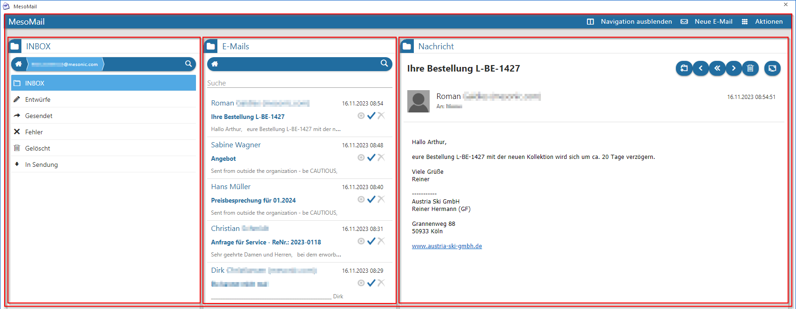
Das MesoMail gliedert sich in verschiedene Bereiche/Container ("INBOX", "E-Mails" und "Nachricht"). Die drei genannten Container befinden sich wiederum im "MesoMail"-Container, der sich über die nahezu gesamte Breite des Fensters erstreckt.
Zwischen den Containern kann über einen sog. "Splitter" (vertikaler Schieberegler) die Breite der Container individuell bestimmt werden.
MesoMail-Container
Der MesoMail-Bereich erstreckt fast über die gesamte Fensterbreite und beinhaltet die drei Container "INBOX", "E-Mails" und "Nachricht". In der oberen, rechten Ecke stehen zudem die drei Buttons "Navigation ausblenden", "Neue E-Mail" und "Aktionen" zur Verfügung.
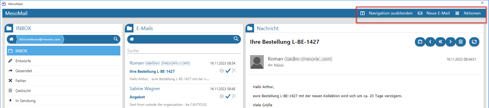
ü "Navigation ausblenden"
Mit
diesem Button kann der "INBOX"-Container ein- bzw. ausgeblendet werden
ü "Neue E-Mail"
Mit diesem Button
kann eine neue E-Mail erfasst werden.
ü "Aktionen"
Über diesen Button
können Aktionen zur Archivierung, CRM und BelegPro ausgeführt werden.
Neue E-Mail
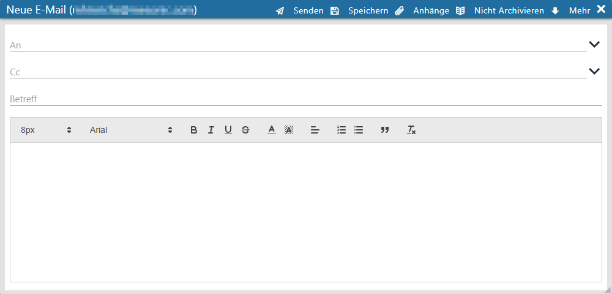
Mit dem Klick auf "Neue E-Mail" öffnet sich ein neues Fenster, wo entsprechend eine neue E-Mail-Nachricht verfasst werden kann. Folgende Möglichkeiten stehen in diesem Fenster zur Verfügung:
Ø Senden
Dieser Button versendet die erstellte E-Mail.
Ø Speichern
Über diesen Button kann die erstellte E-Mail als Entwurf gespeichert werden und aus dem "Entwürfe"-Ordner wieder aufgerufen werden.
Ø Anhänge
Hier lassen sich externe Anhänge hinzufügen, die zusätzlich mit der E-Mail versendet werden sollen.
Ø Nicht Archivieren/Archivieren
Über diesen Button kann eingestellt werden, ob die E-Mail archiviert werden soll oder nicht.
Ø Mehr
Über diesen Button kann das Eingabefeld für die "Bcc"-Empfänger ein- bzw. ausgeblendet werden.
Ø An
An dieser Stelle können neue E-Mail-Adressen direkt eingegeben und mit Enter bestätigt werden. Bereits vorhandene E-Mail-Adressen können über die Autovervollständigung ausgewählt werden.
Ø Cc
An dieser Stelle können E-Mail-Adressen eingegeben werden, an die eine Mail-Kopie verschickt werden soll.
Ø Bcc
An dieser Stelle können E-Mail-Adressen eingegeben werden, an die eine Mail-Kopie verschickt werden soll. Der Unterschied zu Bcc besteht darin, dass die Empfänger in diesem Feld weder von den anderen Empfängern gesehen werden können, noch können sie selbst andere Adressen sehen.
Hinweis
Über den Button "Mehr" kann das Eingabefeld für Bcc ein- bzw. ausgeblendet werden.
Ø Betreff
An dieser Stelle kann der Mailbetreff eingegeben werden.
Schreiben und Formatierung des E-Mail Textes
Für die Textformatierung stehen folgende Optionen/Buttons zur Verfügung:
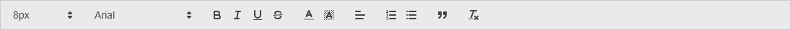
ü Schriftgröße
ü Schriftart
ü Fettdruck
ü Kursiv
ü Unterstrichen
ü Durchgestrichen
ü Schriftfarbe
ü Schrift-Hintergrundfarbe
ü Ausrichtung
ü Nummerierung
ü Aufzählungszeichen
ü Zitat
ü Alle Formatierungen löschen
Aktionen
Beim Klick auf "Aktionen" öffnet sich eine Auswahlliste mit den folgenden Aktionen:
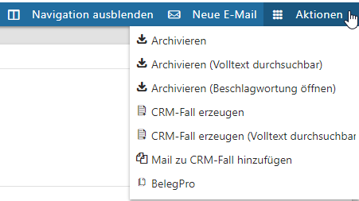
Zusätzlich zur E-Mail können alle Attachments archiviert und beschlagwortet werden.
ü Archivieren
Ermöglicht eine
Archivierung im System. Hierbei werden die Schlagwörter, die ermittelt werden
konnten, automatisch vorgegeben.
ü Archivieren (Beschlagwortung
öffnen)
Mit dieser Aktion können zusätzlich zur Aktion "Archivieren"
individuelle Beschlagwortungen hinzugefügt werden.
ü Archivieren (Volltext
durchsuchbar)
Zusätzlich kann der Mailtext als durchsuchbarer Text
(Archiv-Suche) abgelegt werden.
ü CRM-Fall erzeugen
Über diese
Aktion kann direkt aus der Mail heraus ein CRM-Fall gestartet werden
ü CRM-Fall erzeugen (Volltext durchsuchbar)
ü Mail zu CRM-Fall hinzufügen
Bei
der Aktion wird die CRM-Suche geöffnet und die Mail an den selektierten
CRM-Eintrag angefügt. Dabei wird die Berechtigung aus dem Workflow für die
Uploads nicht berücksichtigt.
ü BelegPro
Aus einer Mail mit
einer PDF-Rechnung im Anhang, kann über diesen Button direkt der BelegPro-Wizard
(Assistent) mit der PDF aus dem Mail ausgeführt werden. Im CRM-Fall befinden
sich anschließend die PDF-Rechnung und der Mailbody im Upload.
Hinweis
Archivieren (Volltext durchsuchbar) und CRM-Fall erzeugen (Volltext durchsuchbar):
ü Der Plaintext wird geholt und in das Schlagwort 95 als Langtext zur Datei übergeben
ü Email-Body-Plaintext wird in das Schlagwort 95 als Langtext zur Email übergeben
ü Gilt für Office-Dokumente, durchsuchbare Pdf-Dateien, Html-Dateien, Text-Dateien
INBOX-Container
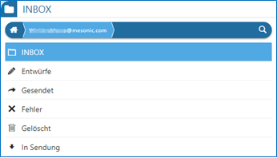
Im linken Bereich befindet sich der INBOX-Container, wo die allg. bekannten Ordner "Posteingang" (INBOX), "Entwürfe", "Gesendet", "Fehler", "Gelöscht" und "In Sendung" enthalten sind.
Zusätzlich befindet sich oberhalb der Ordner noch eine Navigationsleiste, wo das derzeit ausgewählte Mail-Konto angezeigt wird. Nach einem Klick auf das Lupen-Symbol wird ein Sucheingabefeld eingeblendet, wo über einen Suchbegriff die Anzeige auf bestimmte Mailordner oder Mailkonten eingeschränkt werden kann.
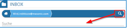
Bei einem Klick auf das Haus-Symbol werden alle eingerichteten Mailkonten angezeigt und können entsprechend ausgewählt werden. Auch hier steht die Such-Funktionalität zur Verfügung. Über das "Zahnrad"-Symbol kann die Konfiguration des eingebundenen Mailkontos geändert werden. Bei einem Klick auf das Icon wird in Schritt 3 der Konteneinrichtung gewechselt (siehe Kapitel der Konteneinrichtung).
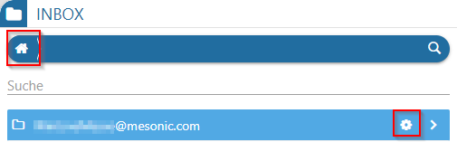
E-Mails-Container
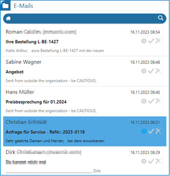
In der Mitte befindet sich der "E-Mails"-Container, hier werden die Mails des selektierten Ordners aus dem "INBOX"-Container als Kacheln dargestellt. In der Kachel werden folgende Informationen dargestellt:
ü Name des Senders
ü Datum und Uhrzeit der Mail
ü Betreff der Mail
ü Beginn des Mailtextes (Firstline)
Zudem stehen jeweils drei Buttons in der Kachel zur Verfügung:
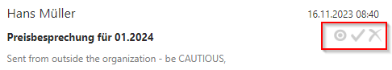
ü E-Mail entfernen
Über diesen Button
können Mails gelöscht werden.
ü Als gelesen/ungelesen markieren
Über
diesen Button wird angezeigt, ob eine Mail bereits gelesen wurde bzw diese kann
hierüber nachträglich wieder als ungelesen gekennzeichnet werden. Ungelesene
Mails werden mit einem blauen Icon dargestellt .
ü Als gekennzeichnet/ungekennzeichnet
markieren
Mit diesem Button kann der Benutzer Mails kennzeichnen. Dies ist
eine reine optische Funktionalität, z.B. um sehr wichtige Mails zu markieren.
Gekennzeichnete Mails werden mit einem blauen Icon dargestellt .
Am oberen Rand des E-Mails-Container kann eine Suche nach bestimmten Mails durchgeführt werden. Nach einem Klick auf das Lupen-Symbol wird ein Sucheingabefeld eingeblendet, wo Mails über den eingegebenen Suchbegriff selektiert werden können. Es werden bei der Suche Betreff, Sender, FirstLine und das Datum durchsucht.
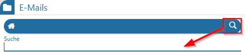
Nachricht-Container
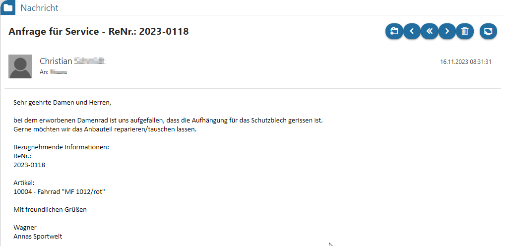
Wird eine Mail im E-Mails-Container selektiert, wird diese vollständig im "Nachricht"-Container im rechten Bereich angezeigt. Oberhalb des Mailtextes befindet sich der Kopfbereich der Mail. Hier werden Betreff, Sendername und ggf. eine Grafik des Senders sowie Datum und Uhrzeit der Mail als Information angezeigt.
Zusätzlich stehen die folgenden Buttons im Kopfbereich zur Verfügung:
ü CRM-Fall erstellen
ü Antworten
ü Allen antworten
ü Weiterleiten
ü Löschen
ü Vergrößern/Verkleinern
Buttons
Ø Speichern
Dieser Button ist im Konfigurationsfenster aktiv und speichert dort vorgenommene Einstellungen.
Ø Ende
Dieser Button beendet das MesoMail-Programm.
Ø Konfiguration
Hiermit wird das Konfigurationsfenster rund um die E-Mail-Konten geöffnet. Das Fenster kann durch ein erneutes Anklicken dieses Buttons oder über den Speichern-Button wieder geschlossen werden.